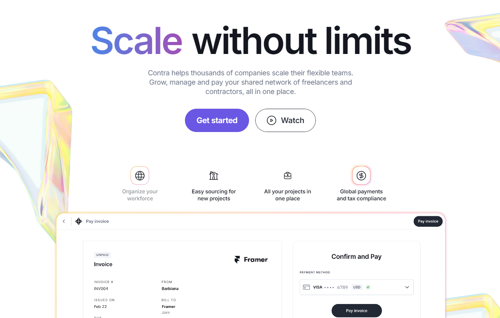

Sakura Team's Role in Building Contra
Creating the Contra platform involved multiple stages, requiring a deep understanding of freelance work and seamless integration of various features for both freelancers and clients. Here's how Sakura approached this innovative project:

Project Planning and Research
- Client Briefing: Sakura conducted in-depth consultations with the Contra leadership team to fully understand their vision for a commission-free freelance platform. The goal was to deliver a tool that catered equally to the needs of freelancers and clients.
- Market Research: Our team analyzed existing freelance platforms, identifying their strengths and weaknesses. This research helped us define Contra’s unique positioning in the market, ensuring it offered features unmatched by competitors.

Design and Prototyping
- Wireframing: Sakura developed initial wireframes to establish the layout, navigation, and user flow, making the platform easy to use for both new and experienced freelancers.
- Visual Design: The design team focused on a modern, minimalist interface that allows users to easily showcase portfolios, browse opportunities, and manage their projects. A clean aesthetic was essential to convey professionalism and simplicity.
- Client Feedback and Refinement: After presenting design prototypes, we gathered feedback from the Contra team, refining the interface and functionality to match their vision perfectly.

Development and Programming
- Frontend Development: Our developers transformed the approved designs into responsive, interactive web pages optimized for various devices. The seamless user experience ensured that freelancers could manage their portfolios, invoices, and projects easily.
- Backend Development: Sakura built a robust backend infrastructure, including tools for contract management, invoicing, and secure payment processing. We ensured the platform could scale effectively to handle thousands of users simultaneously.
- Testing and Optimization: Rigorous testing was conducted across multiple browsers and devices to ensure Contra’s functionality remained consistent. This included testing payment systems, ensuring responsive design, and fine-tuning the platform for performance.

Launch and Support
- Website Launch: After extensive testing and optimization, Contra was successfully launched, providing freelancers and businesses a streamlined, efficient way to work together. SEO optimization and additional tweaks ensured high visibility.
- Client Training: The Sakura team trained Contra's staff on how to manage the platform and its backend, ensuring they could easily update content and manage users without technical assistance.
- Ongoing Maintenance: Sakura continues to provide technical support and updates, ensuring the platform stays up-to-date with evolving technology and user needs. Regular performance monitoring and feature updates keep the platform competitive.